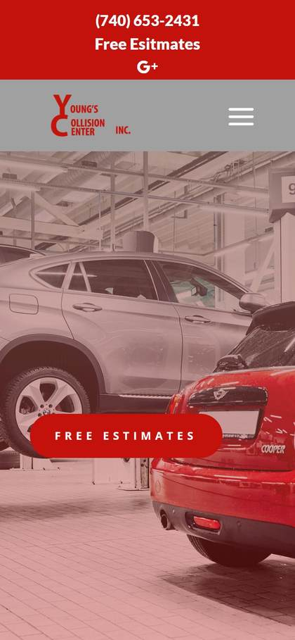
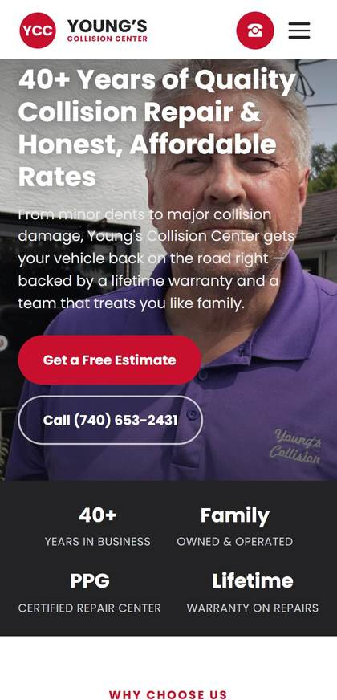
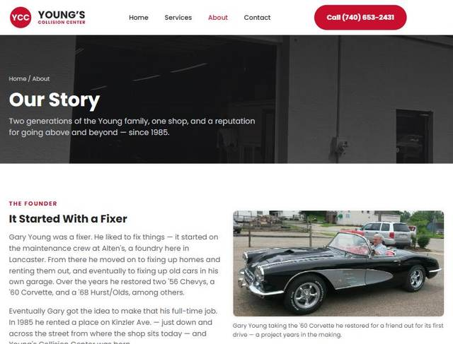
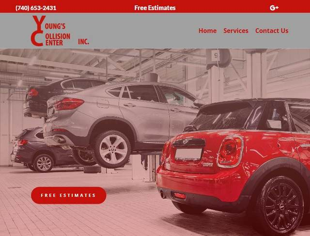
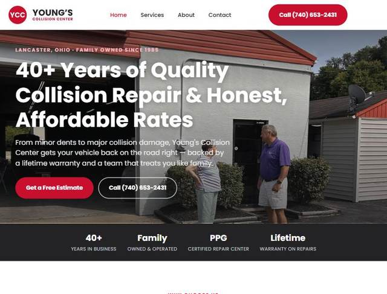
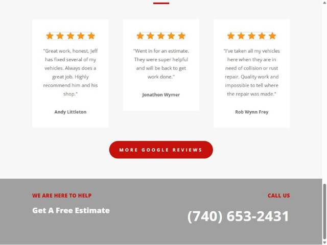
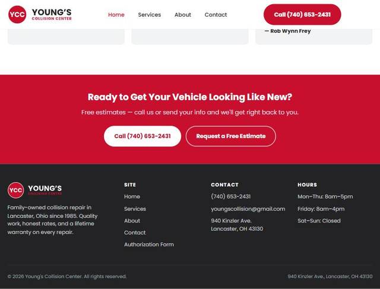

Young's Collision Center — a family-owned auto body shop in Lancaster, Ohio, serving the area since 1985. A full rebuild of their web presence, from the ground up.
Most people searching for a collision shop are doing it from their phone, often right after an accident. The old mobile site buried navigation behind a hamburger menu with no quick way to call — and even had a typo in the headline. The new one puts a tap-to-call icon front and center, with two clearly different calls to action.


The old logo was plain stacked text with no mark, and the red shade shifted slightly depending on where it showed up on the page. The new brand has an actual mark, one consistent color used everywhere, and a favicon that doesn't look like a default placeholder.
The old site never told the story at all — there was no About page, just a phone number. The new site has an actual "Our Story" page: two generations of the Young family, real photos, and a timeline from 1985 to today.
No About page existed on the old site.

The old homepage opened with a wide shot of cars on lifts — accurate, but generic, and nobody in sight. The new one leads with Jeff himself, standing at the shop, with trust signals (40+ years, family owned, PPG certified, lifetime warranty) right under the fold.


The old footer was a phone number on a gray bar. The new one has the full address, hours, email, and a simple site map — everything someone needs to decide whether to drive over right now.


Search engines couldn't read the old page properly — no description, a broken page title, and none of the behind-the-scenes information Google uses to show a business correctly in search results. Now all of that's in place: a real description, a proper title, and the structured details that tell Google exactly what the business is, where it is, and when it's open. It won't change how the site looks to a visitor, but it changes whether people find it in the first place.
This is the same process behind every site built at Marsh n Main: find what's quietly costing a business trust and customers, and fix it — without a redesign that takes months or a price tag that doesn't make sense for a small shop.
Let's talk about your site →